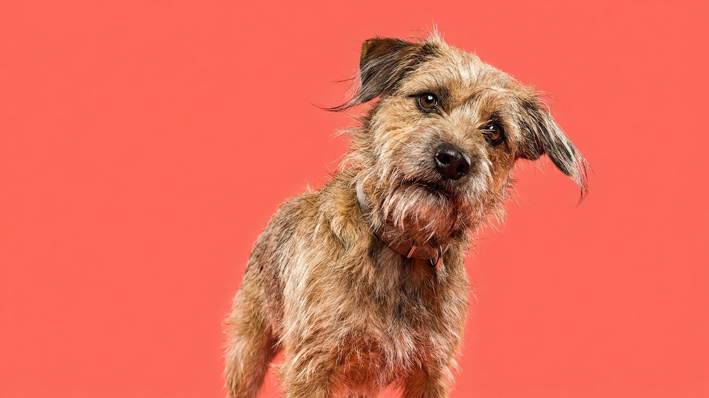

Собака вдруг затряслась — и вы не знаете, это от холода, от страха или что-то серьёзное. Дрожь выглядит одинаково, а причины разные: часть из них хозяин устраняет сам за пять минут, часть требует визита к врачу. Ниже — как различить их по контексту, не гадая.
🐾 Спросите AI-ветеринара прямо сейчас
AnimaLife — приложение, где AI-ветеринар отвечает на вопросы о кошке или собаке 24/7. Бесплатно, без записи и очередей.
Холод. Самая очевидная причина. Короткошёрстные и миниатюрные породы мёрзнут быстрее. Если собака дрожит после прогулки в дождь или лежит на холодном полу — укройте, переместите в тёплое место. Дрожь должна пройти за 10–15 минут. Не прошла — смотрите дальше.
Намокание после купания или дождя. Мышечная дрожь помогает телу согреться — это нормальная реакция. Насухо оботрите полотенцем, исключите сквозняк. Если собака продолжает дрожать уже в тепле дольше получаса — это не «просто холодно».
Возбуждение и радость. Мелкая дрожь перед прогулкой, во время игры или при встрече хозяина — физиологическая реакция на выброс адреналина. Собака активна, уши и хвост приподняты, глаза блестят. Здесь вмешательство не нужно: дрожь сама уходит через несколько минут.
Страх и стресс. Гроза, фейерверк, поездка в машине, визит в ветклинику, переезд — всё это запускает дрожь вместе с другими сигналами: поджатый хвост, уши назад, попытки спрятаться, скулёж. Задача хозяина — снизить интенсивность стрессора. Закройте шторы при грозе, не тащите собаку за ошейник в пугающее место. Обустройте «безопасный угол»: лежак или переноска в тихой части комнаты, где собака может укрыться сама. Не успокаивайте голосом нарочито — это усиливает тревогу. Просто будьте рядом, спокойно.
Мелкие породы и мышечная дрожь. Чихуахуа, той-терьеры, шпицы и другие миниатюрные собаки дрожат чаще и при менее выраженных поводах: у них высокий метаболизм и меньше мышечной массы для поддержания тепла. Если дрожь хроническая, но собака активна, ест и не выглядит вялой — проконсультируйтесь с ветеринаром, чтобы убедиться, что нет других причин.
Пожилой возраст. У собак старше 8–10 лет появляется мышечная слабость: мышцы задних лап дрожат при нагрузке или после вставания. Это не всегда боль — нередко просто возрастное снижение мышечного тонуса. Но именно у пожилых собак важно не списывать дрожь на возраст автоматически: она может сигнализировать о суставных проблемах или других изменениях, которые ветеринар обнаружит на осмотре.
Собаке нужна точка, куда она уходит сама — без принуждения. Хорошо работает переноска или угловой лежак с бортами: закрытое пространство снижает тревогу. Постелите туда вещь с вашим запахом. Во время грозы или салюта не тащите собаку на улицу и не запирайте в пустой комнате — оставьте возможность самой выбрать место. Если стрессовые ситуации повторяются регулярно (например, еженедельные фейерверки в сезон), обсудите с ветеринаром поведенческую коррекцию.
Есть ситуации, когда дрожь — не реакция на холод или испуг, а сигнал, требующий осмотра. Покажите собаку ветеринару, если:
Не ждите «до завтра», если видите несколько из этих признаков одновременно. Ветеринар разберётся в причине быстрее, чем вы успеете перебрать варианты самостоятельно.
🐾 Дневник здоровья питомца — в кармане
Вес, прививки, симптомы и напоминания в одном приложении. AnimaLife следит за здоровьем питомца вместо вас.
🐾 Понравился разбор?
Подпишитесь на канал — каждый день разбираем по одному тревожному симптому у кошек и собак: что в пределах нормы, а когда пора к врачу. Подпишитесь, чтобы не пропустить разбор, который может спасти здоровье вашего питомца.
Материал носит информационный характер и не заменяет очную консультацию ветеринара.